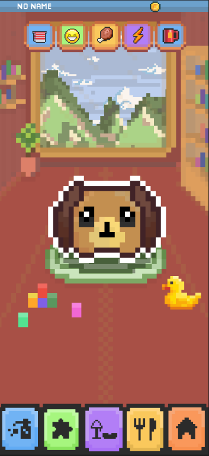

Project Case Study
PetPal
An interactive 2D pixel-art mobile game where players adopt a virtual pet and care for its needs through feeding, grooming, and play.

Project visuals
The pixel-art logo establishes PetPal's playful identity, while the gameplay screen shows its care items, virtual pet, room environment, and activity navigation.

The problem
Virtual pet games need to communicate responsibility without making routine care feel like a chore, especially for younger and casual players.
The solution
PetPal turns everyday pet-care actions into short, friendly interactions supported by an approachable 8-bit visual style and clear status feedback.
My contribution
- Designed the mobile interface and interaction flow.
- Developed the front-end presentation for pet-care activities.
- Applied a consistent pixel-art visual direction.
- Organized feeding, grooming, and play into understandable actions.
Core experience
- Adopt and personalize a virtual pet
- Monitor care and well-being needs
- Feed, groom, and play through simple interactions
- Encourage responsibility through visible feedback
Challenge and response
I balanced the game’s playful personality with readable mobile controls, keeping the interface visually expressive while making the primary care actions easy to recognize.
What I learned
PetPal strengthened my skills in mobile interaction design, visual consistency, game feedback, and creating experiences for a broad casual audience.
Want to discuss this project?
I can explain the interface flow, visual direction, and front-end decisions during an interview.